In [1]cell 2
import seaborn as sns
import pandas as pd
import matplotlib.pyplot as plt
import numpy as np
# One consistent look and one consistent colour per species for the whole notebook.
sns.set_theme(style="whitegrid", context="notebook")
SPECIES_ORDER = ["setosa", "versicolor", "virginica"]
SPECIES_COLORS = {
"setosa": "#0173B2", # blue
"versicolor": "#DE8F05", # orange
"virginica": "#029E73", # green
}
FEATURES = ["sepal_length", "sepal_width", "petal_length", "petal_width"]
iris = sns.load_dataset("iris")
iris.head()Output
sepal_length sepal_width petal_length petal_width species 0 5.1 3.5 1.4 0.2 setosa 1 4.9 3.0 1.4 0.2 setosa 2 4.7 3.2 1.3 0.2 setosa 3 4.6 3.1 1.5 0.2 setosa 4 5.0 3.6 1.4 0.2 setosa
In [2]cell 5
fig, (ax1, ax2) = plt.subplots(1, 2, figsize=(11, 4.6))
for ax in (ax1, ax2):
ax.set_aspect("equal"); ax.axis("off"); ax.grid(False)
SEPAL_C, PETAL_C = "#7A9E5B", "#8B6BB1"
# --- Left: where the parts sit on the flower ---
ax1.set_title("Where they sit on the flower", fontsize=11, weight="bold")
from matplotlib.patches import Ellipse
for angle in (90, 210, 330): # 3 outer sepals, drooping
r = np.deg2rad(angle)
ax1.add_patch(Ellipse((1.05*np.cos(r), 1.05*np.sin(r)), 0.85, 2.0,
angle=angle - 90, color=SEPAL_C, alpha=.85))
for angle in (30, 150, 270): # 3 inner petals, upright
r = np.deg2rad(angle)
ax1.add_patch(Ellipse((0.60*np.cos(r), 0.60*np.sin(r)), 0.60, 1.25,
angle=angle - 90, color=PETAL_C, alpha=.9))
ax1.add_patch(plt.Circle((0, 0), 0.22, color="#E8C547"))
ax1.annotate("sepal\n(outer leaf)", xy=(0.95, 1.55), xytext=(1.6, 2.3),
color=SEPAL_C, weight="bold", ha="center",
arrowprops=dict(arrowstyle="->", color=SEPAL_C, lw=1.6))
ax1.annotate("petal\n(inner leaf)", xy=(0.45, 0.75), xytext=(-1.9, 2.3),
color=PETAL_C, weight="bold", ha="center",
arrowprops=dict(arrowstyle="->", color=PETAL_C, lw=1.6))
ax1.set_xlim(-2.9, 2.9); ax1.set_ylim(-2.6, 3.0)
# --- Right: the 4 measurements, drawn to the real average size ---
ax2.set_title("The 4 numbers, at real average size (cm)", fontsize=11, weight="bold")
m = iris[["sepal_length", "sepal_width", "petal_length", "petal_width"]].mean()
def draw(cx, w, h, colour, name, wkey, hkey):
ax2.add_patch(Ellipse((cx, h/2), w, h, color=colour, alpha=.55))
ax2.annotate("", xy=(cx - w/2 - .35, 0), xytext=(cx - w/2 - .35, h),
arrowprops=dict(arrowstyle="<->", color="#333", lw=1.5))
ax2.text(cx - w/2 - .5, h/2, f"{hkey}\n{m[hkey]:.1f} cm", ha="right",
va="center", fontsize=9)
ax2.annotate("", xy=(cx - w/2, -.45), xytext=(cx + w/2, -.45),
arrowprops=dict(arrowstyle="<->", color="#333", lw=1.5))
ax2.text(cx, -.8, f"{wkey}\n{m[wkey]:.1f} cm", ha="center", va="top", fontsize=9)
ax2.text(cx, h + .3, name, ha="center", fontsize=11, weight="bold", color=colour)
draw(0.0, m["sepal_width"], m["sepal_length"], SEPAL_C, "SEPAL", "sepal_width", "sepal_length")
draw(5.2, m["petal_width"], m["petal_length"], PETAL_C, "PETAL", "petal_width", "petal_length")
ax2.set_xlim(-2.6, 7.4); ax2.set_ylim(-1.9, 7.2)
plt.tight_layout(); plt.show()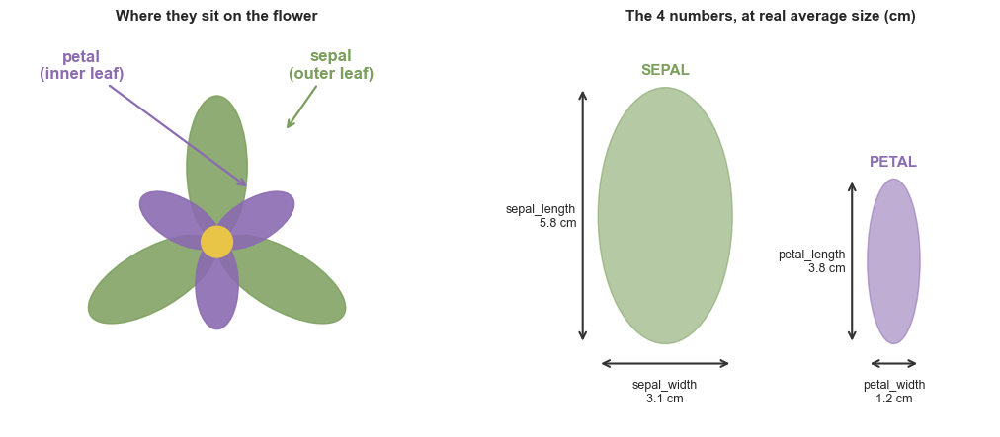
In [3]cell 8
from matplotlib.patches import Ellipse, FancyBboxPatch
means = iris.groupby("species")[FEATURES].mean()
def draw_flower(ax, cx, cy, sl, sw, pl, pw, colour):
"""One schematic iris: 3 outer sepals + 3 inner petals, drawn to real cm."""
for a in (90, 210, 330): # sepals (outer, faded)
r = np.deg2rad(a)
ax.add_patch(Ellipse((cx + (sl/2)*np.cos(r), cy + (sl/2)*np.sin(r)),
sw, sl, angle=a-90, facecolor=colour, alpha=.30,
edgecolor=colour, lw=1.2))
for a in (30, 150, 270): # petals (inner, solid)
r = np.deg2rad(a)
ax.add_patch(Ellipse((cx + (pl/2)*np.cos(r), cy + (pl/2)*np.sin(r)),
pw, pl, angle=a-90, facecolor=colour, alpha=.85,
edgecolor=colour, lw=1.2))
ax.add_patch(plt.Circle((cx, cy), .45, facecolor="#E8C547", edgecolor="white", lw=1.5))
def node(ax, cx, cy, text, colour, w, h, fs):
ax.add_patch(FancyBboxPatch((cx-w/2, cy-h/2), w, h, boxstyle="round,pad=0.35",
linewidth=2, edgecolor=colour, facecolor="white", zorder=3))
ax.text(cx, cy, text, ha="center", va="center", fontsize=fs,
weight="bold", color=colour, zorder=4)
fig, ax = plt.subplots(figsize=(13, 10))
ax.set_aspect("equal"); ax.axis("off"); ax.grid(False)
XS = [0, 20, 40]
TOP_Y, BUS_Y, SP_Y, FLOWER_Y = 40, 34, 30, 17
TABLE_Y = FLOWER_Y - means.sepal_length.max() - 2.6 # one shared baseline
LINE = "#9AA5B1"
# the flow, named down the left edge
for y, step, note in [(TOP_Y, "1 - the dataset", "one table, 150 rows"),
(SP_Y, "2 - species", "the label column"),
(FLOWER_Y, "3 - one flower", "= one row"),
(TABLE_Y - 4.5, "4 - measurements", "the 4 feature columns")]:
ax.text(-15, y, step, ha="left", va="center", fontsize=11, weight="bold", color="#5A6472")
ax.text(-15, y - 1.7, note, ha="left", va="center", fontsize=9, style="italic", color="#98A2B0")
# level 1: the dataset
node(ax, 20, TOP_Y, "IRIS\n150 flowers measured", "#333", 17, 4.6, 14)
ax.plot([20, 20], [TOP_Y-2.3, BUS_Y], color=LINE, lw=2, zorder=1)
ax.plot([XS[0], XS[2]], [BUS_Y, BUS_Y], color=LINE, lw=2, zorder=1)
for x in XS:
ax.plot([x, x], [BUS_Y, SP_Y+1.9], color=LINE, lw=2, zorder=1)
# levels 2-4: species -> flower at true average size -> its 4 numbers
for x, sp in zip(XS, SPECIES_ORDER):
c, m = SPECIES_COLORS[sp], means.loc[sp]
node(ax, x, SP_Y, f"{sp}\n50 flowers", c, 14, 3.8, 13)
ax.plot([x, x], [SP_Y-1.9, FLOWER_Y+m.sepal_length+.6], color=LINE, lw=2, zorder=1)
draw_flower(ax, x, FLOWER_Y, m.sepal_length, m.sepal_width, m.petal_length, m.petal_width, c)
ax.text(x, TABLE_Y, "average measurements", ha="center", va="top",
fontsize=9, style="italic", color="#666")
for i, k in enumerate(FEATURES):
yy, strong = TABLE_Y - 1.9 - i*1.55, k.startswith("petal")
ax.text(x-.6, yy, k, ha="right", va="center", fontsize=9.5,
color="#333" if strong else "#8A94A0", weight="bold" if strong else "normal")
ax.text(x+.6, yy, f"{m[k]:.2f} cm", ha="left", va="center", fontsize=9.5,
color=c if strong else "#8A94A0", weight="bold" if strong else "normal")
ax.text(20, TABLE_Y - 9.2,
"Same 4 columns for every flower - only the numbers change.\n"
"Petals (solid) grow sharply across species; sepals (faded) barely move.",
ha="center", va="top", fontsize=11, color="#444")
ax.set_xlim(-16, 50); ax.set_ylim(TABLE_Y - 13, 44)
plt.tight_layout(); plt.show()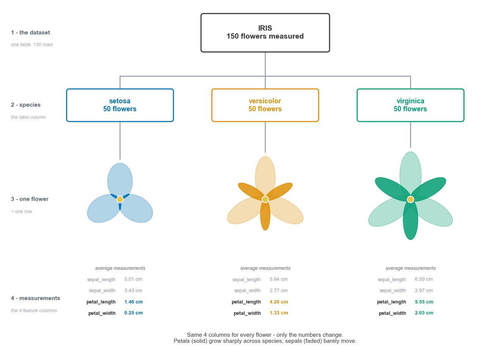
In [4]cell 11
print("rows, columns :", iris.shape)
print("missing values:", iris.isnull().sum().sum())
print("duplicate rows:", iris.duplicated().sum())
print()
iris.info()Output
rows, columns : (150, 5) missing values: 0 duplicate rows: 1 <class 'pandas.DataFrame'> RangeIndex: 150 entries, 0 to 149 Data columns (total 5 columns): # Column Non-Null Count Dtype --- ------ -------------- ----- 0 sepal_length 150 non-null float64 1 sepal_width 150 non-null float64 2 petal_length 150 non-null float64 3 petal_width 150 non-null float64 4 species 150 non-null str dtypes: float64(4), str(1) memory usage: 6.0 KB
In [5]cell 13
iris[iris.duplicated(keep=False)] # the two identical flowers
Output
sepal_length sepal_width petal_length petal_width species 101 5.8 2.7 5.1 1.9 virginica 142 5.8 2.7 5.1 1.9 virginica
In [6]cell 15
counts = iris["species"].value_counts()[SPECIES_ORDER]
print(counts.to_string())
fig, ax = plt.subplots(figsize=(6, 3.4))
sns.countplot(data=iris, y="species", order=SPECIES_ORDER,
hue="species", hue_order=SPECIES_ORDER,
palette=SPECIES_COLORS, legend=False, ax=ax)
for i, v in enumerate(counts):
ax.text(v + 1, i, str(v), va="center", fontsize=10, color="#444")
ax.set_xlim(0, 60); ax.set_xlabel("number of flowers"); ax.set_ylabel("")
ax.set_title("50 of each species — a perfectly balanced dataset", fontsize=11)
sns.despine(left=True); plt.tight_layout(); plt.show()Output
species setosa 50 versicolor 50 virginica 50
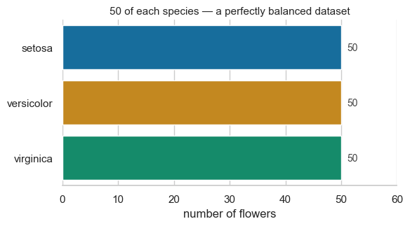
In [7]cell 18
iris.describe().round(2)
Output
sepal_length sepal_width petal_length petal_width count 150.00 150.00 150.00 150.00 mean 5.84 3.06 3.76 1.20 std 0.83 0.44 1.77 0.76 min 4.30 2.00 1.00 0.10 25% 5.10 2.80 1.60 0.30 50% 5.80 3.00 4.35 1.30 75% 6.40 3.30 5.10 1.80 max 7.90 4.40 6.90 2.50
In [8]cell 19
long = iris.melt(id_vars="species", var_name="measurement", value_name="cm")
fig, ax = plt.subplots(figsize=(9, 4.2))
sns.boxplot(data=long, x="cm", y="measurement", color="#B8CBD9",
width=.6, fliersize=3, ax=ax)
ax.set_xlabel("centimetres"); ax.set_ylabel("")
ax.set_title("All 4 measurements on one scale (all 150 flowers together)", fontsize=11)
sns.despine(left=True); plt.tight_layout(); plt.show()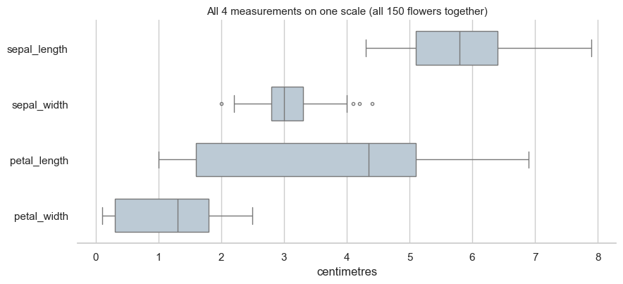
In [9]cell 22
means = iris.groupby("species")[
["sepal_length", "sepal_width", "petal_length", "petal_width"]
].mean().round(2).loc[SPECIES_ORDER]
meansOutput
sepal_length sepal_width petal_length petal_width species setosa 5.01 3.43 1.46 0.25 versicolor 5.94 2.77 4.26 1.33 virginica 6.59 2.97 5.55 2.03
In [10]cell 23
fig, ax = plt.subplots(figsize=(9, 4.4))
sns.barplot(data=long, x="measurement", y="cm",
hue="species", hue_order=SPECIES_ORDER,
palette=SPECIES_COLORS, errorbar=None, ax=ax)
for container in ax.containers:
ax.bar_label(container, fmt="%.1f", fontsize=8.5, padding=2, color="#444")
ax.set_ylim(0, 7.2); ax.set_xlabel(""); ax.set_ylabel("average cm")
ax.set_title("Average of each measurement, per species", fontsize=11)
ax.legend(title="species", frameon=False)
sns.despine(); plt.tight_layout(); plt.show()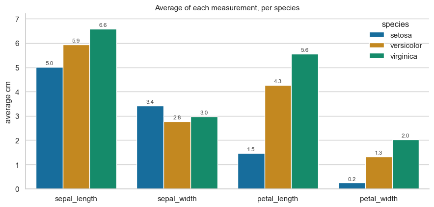
In [11]cell 26
features = FEATURES
fig, axes = plt.subplots(2, 2, figsize=(11, 6.6))
for ax, feat in zip(axes.flat, features):
sns.kdeplot(data=iris, x=feat, hue="species", hue_order=SPECIES_ORDER,
palette=SPECIES_COLORS, fill=True, alpha=.35,
common_norm=False, legend=(feat == "petal_length"), ax=ax)
ax.set_title(feat, fontsize=11, weight="bold")
ax.set_xlabel("cm"); ax.set_ylabel("")
ax.set_yticks([])
if feat == "petal_length": # park it in the empty top-right
sns.move_legend(ax, "upper right", frameon=False, title="species")
sns.despine(left=True)
fig.suptitle("Where each species sits on each measurement", fontsize=12, y=1.0)
plt.tight_layout(); plt.show()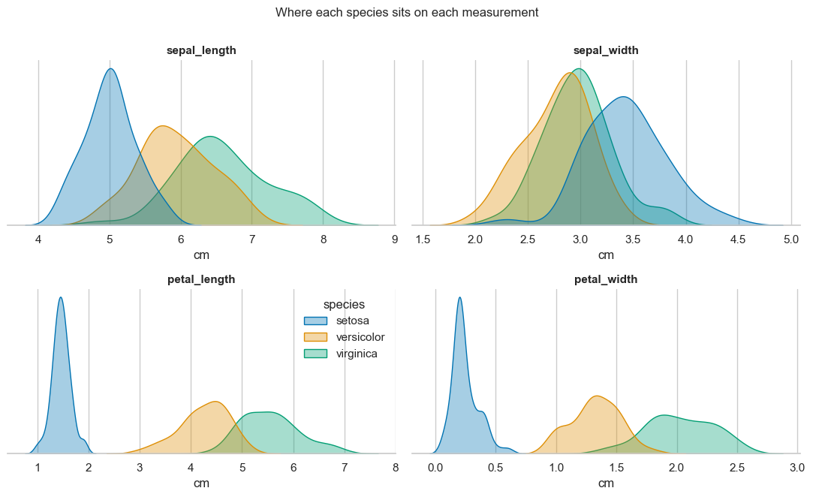
In [12]cell 29
g = sns.pairplot(iris, hue="species", hue_order=SPECIES_ORDER,
palette=SPECIES_COLORS, diag_kind="kde",
plot_kws=dict(s=28, alpha=.75, edgecolor="white", linewidth=.4),
height=1.9)
g.figure.suptitle("Every feature against every other feature", y=1.02, fontsize=12)
plt.show()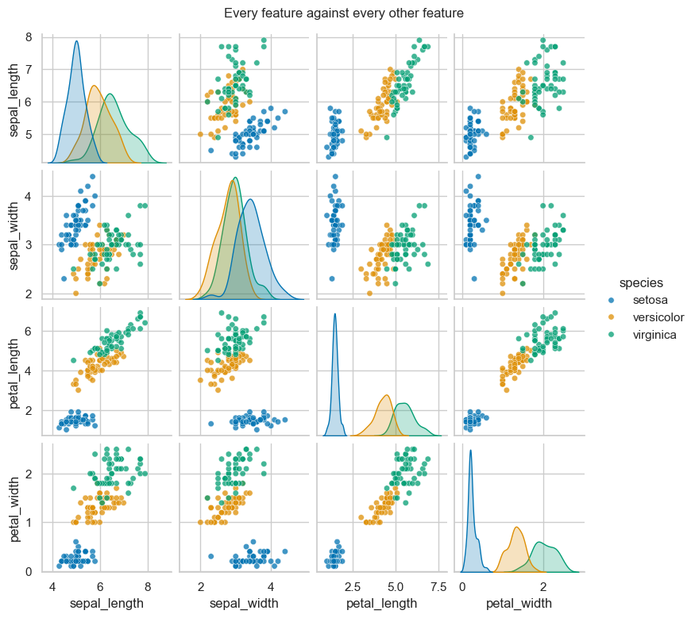
In [13]cell 32
corr = iris[features].corr()
fig, ax = plt.subplots(figsize=(6.2, 5))
sns.heatmap(corr, annot=True, fmt=".2f", cmap="RdBu_r", center=0,
vmin=-1, vmax=1, square=True, linewidths=2, linecolor="white",
cbar_kws=dict(label="correlation", shrink=.8), ax=ax)
ax.set_title("How the 4 measurements move together", fontsize=11, pad=12)
plt.tight_layout(); plt.show()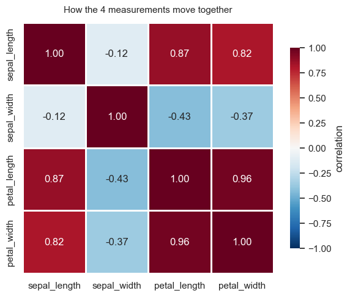
In [14]cell 35
# A hand-written decision tree, straight off the petal charts.
prediction = np.where(iris.petal_length < 2.5, "setosa",
np.where(iris.petal_width < 1.75, "versicolor", "virginica"))
print("2-rule accuracy :", f"{(prediction == iris.species).mean():.1%}")
print("setosa rule alone :", f"{((iris.petal_length < 2.5) == (iris.species == 'setosa')).mean():.1%}")
print()
print(pd.crosstab(iris.species, prediction,
rownames=["actual"], colnames=["predicted"]).to_string())Output
2-rule accuracy : 96.0% setosa rule alone : 100.0% predicted setosa versicolor virginica actual setosa 50 0 0 versicolor 0 49 1 virginica 0 5 45
In [15]cell 36
fig, ax = plt.subplots(figsize=(7.6, 5.4))
sns.scatterplot(data=iris, x="petal_length", y="petal_width",
hue="species", hue_order=SPECIES_ORDER, palette=SPECIES_COLORS,
s=70, alpha=.85, edgecolor="white", linewidth=.7, ax=ax)
ax.axvline(2.5, color="#666", ls="--", lw=1.4)
ax.axhline(1.75, color="#666", ls="--", lw=1.4, xmin=.28)
ax.text(2.40, 1.15, "petal_length = 2.5", rotation=90, ha="right", va="center",
fontsize=9, color="#555")
ax.text(2.75, 1.83, "petal_width = 1.75", ha="left", va="bottom",
fontsize=9, color="#555")
for label, x, y, colour in [("setosa", 1.45, .85, SPECIES_COLORS["setosa"]),
("versicolor", 4.0, .55, SPECIES_COLORS["versicolor"]),
("virginica", 6.3, 2.60, SPECIES_COLORS["virginica"])]:
ax.text(x, y, label, color=colour, fontsize=11, weight="bold", ha="center")
ax.set_ylim(0, 2.8)
ax.set_xlabel("petal_length (cm)"); ax.set_ylabel("petal_width (cm)")
ax.set_title("Two straight lines get 96% of the flowers right", fontsize=11)
ax.legend(title="species", frameon=False, loc="lower right")
sns.despine(); plt.tight_layout(); plt.show()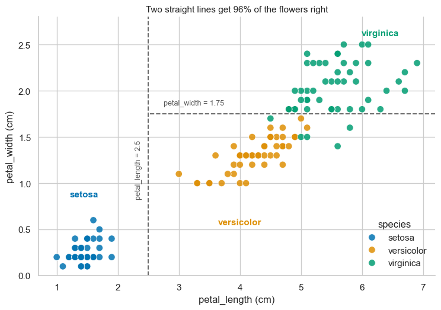
In [16]cell 0
import numpy as np
import pandas as pd
import matplotlib.pyplot as plt
import seaborn as sns
%matplotlib inline
sns.set_style('darkgrid')
sns.set_palette('viridis')
print("All libraries imported successfully!")
print("NumPy version:", np.__version__)
print("Pandas version:", pd.__version__)
print("Seaborn version:", sns.__version__)Output
All libraries imported successfully! NumPy version: 2.4.6 Pandas version: 3.0.3 Seaborn version: 0.13.2
In [17]cell 1
# Load iris dataset — built into seaborn just like tips!
df = sns.load_dataset('iris')
print("Dataset loaded successfully!")
print("Shape:", df.shape)Output
Dataset loaded successfully! Shape: (150, 5)
In [18]cell 2
fig, axes = plt.subplots(2, 2, figsize=(14, 10))
fig.suptitle('Iris Dataset — Complete Analysis Dashboard',
fontsize=16, fontweight='bold', y=1.02)
colors = {'setosa': 'steelblue', 'versicolor': 'tomato', 'virginica': 'green'}
# ── Chart 1 — top left — Petal Length Distribution by Species ──
for species in ['setosa', 'versicolor', 'virginica']:
data = df[df['species']==species]['petal_length']
axes[0,0].hist(data, bins=15, alpha=0.6,
label=species, color=colors[species], edgecolor='white')
axes[0,0].set_title('Petal Length Distribution')
axes[0,0].set_xlabel('Petal Length (cm)')
axes[0,0].set_ylabel('Count')
axes[0,0].legend()
# ── Chart 2 — top right — Scatter plot petal_length vs petal_width ──
for species, group in df.groupby('species'):
axes[0,1].scatter(group['petal_length'], group['petal_width'],
label=species,
color=colors[species],
alpha=0.7, s=60)
axes[0,1].set_title('Petal Length Distribution')
axes[0,1].set_xlabel('Petal Length (cm)')
axes[0,1].set_ylabel('Count')
axes[0,1].legend()
# ── Chart 3 — bottom left — Box plot of all 4 measurements ──
# Melt the dataframe
# Chart 3 — bottom left — Box plot all 4 measurements
df_melted = df.melt(id_vars='species',
var_name='measurement',
value_name='value')
sns.boxplot(data=df_melted,
x='measurement',
y='value',
hue='species',
ax=axes[1,0])
axes[1,0].set_title('All Measurements by Species')
axes[1,0].set_xlabel('Measurement')
axes[1,0].set_ylabel('Value (cm)')
# ── Chart 4 — bottom right — Correlation Heatmap ──
correlation = df.drop('species', axis=1).corr()
print(correlation.round(2))
sns.heatmap(correlation,
annot=True,
fmt='.2f',
cmap='coolwarm',
center=0,
ax=axes[1,1])
plt.tight_layout()
plt.show()Output
sepal_length sepal_width petal_length petal_width sepal_length 1.00 -0.12 0.87 0.82 sepal_width -0.12 1.00 -0.43 -0.37 petal_length 0.87 -0.43 1.00 0.96 petal_width 0.82 -0.37 0.96 1.00
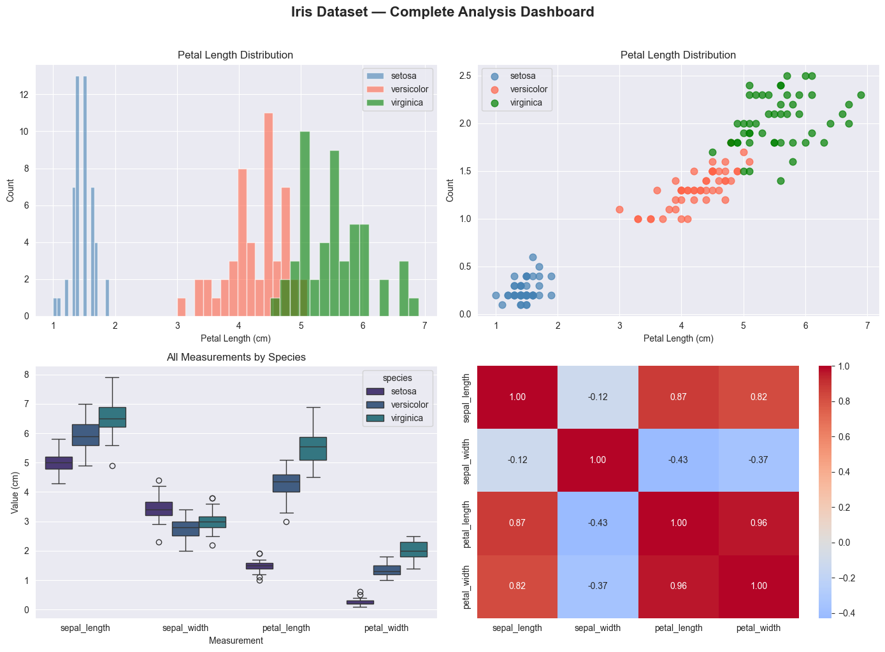
In [19]cell 3
fig.savefig('iris_dashboard.png', dpi=150, bbox_inches='tight')In [20]cell 0
#150 flowers, 3 species, each species has distinctly different petal sizes — and that difference is what makes them identifiable. #Flowers 1-50 → Setosa → tiny petals (~1.5cm) #Flowers 51-100 → Versicolor → medium petals (~4.3cm) #Flowers 101-150 → Virginica → large petals (~5.5cm)
In [21]cell 1
# Sepal vs Petal — simple story # Imagine you're holding an iris flower: # The first thing you see from outside are the big green-ish flaps that wrap around the flower — those are the sepals. # They protect the flower when it's still a bud. Think of them as the flower's jacket. # When you look inside, you see the colourful purple parts standing upright — those are the petals. # They attract bees and butterflies. Think of them as the flower's dress. # So Fisher measured both — the jacket (sepal) and the dress (petal) — in two ways each: length and width.
In [22]cell 2
import numpy as np
import pandas as pd
import matplotlib.pyplot as plt
import seaborn as sns
%matplotlib inline
sns.set_style('darkgrid')
sns.set_palette('viridis')
print("All libraries imported successfully!")
print("NumPy version:", np.__version__)
print("Pandas version:", pd.__version__)
print("Seaborn version:", sns.__version__)Output
All libraries imported successfully! NumPy version: 2.4.6 Pandas version: 3.0.3 Seaborn version: 0.13.2
In [23]cell 3
# Load iris dataset — built into seaborn just like tips!
df = sns.load_dataset('iris')
print("Dataset loaded successfully!")
print("Shape:", df.shape)Output
Dataset loaded successfully! Shape: (150, 5)
In [24]cell 4
# Setosa has tiny petals — around 1.5cm # Versicolor has medium petals — around 4.3cm # Virginica has large petals — around 5.5cm
In [25]cell 5
# Look at ONLY Setosa flowers
# print(df)
# print("\n")
Versicolor = df[df['species'] == 'versicolor']
print("Versicolor flowers:")
print(Versicolor[Versicolor['petal_length'] > 1.9])
# print(setosa.head())
# print("Shape:", setosa.shape)Output
Versicolor flowers:
sepal_length sepal_width petal_length petal_width species
50 7.0 3.2 4.7 1.4 versicolor
51 6.4 3.2 4.5 1.5 versicolor
52 6.9 3.1 4.9 1.5 versicolor
53 5.5 2.3 4.0 1.3 versicolor
54 6.5 2.8 4.6 1.5 versicolor
55 5.7 2.8 4.5 1.3 versicolor
56 6.3 3.3 4.7 1.6 versicolor
57 4.9 2.4 3.3 1.0 versicolor
58 6.6 2.9 4.6 1.3 versicolor
59 5.2 2.7 3.9 1.4 versicolor
60 5.0 2.0 3.5 1.0 versicolor
61 5.9 3.0 4.2 1.5 versicolor
62 6.0 2.2 4.0 1.0 versicolor
63 6.1 2.9 4.7 1.4 versicolor
64 5.6 2.9 3.6 1.3 versicolor
65 6.7 3.1 4.4 1.4 versicolor
66 5.6 3.0 4.5 1.5 versicolor
67 5.8 2.7 4.1 1.0 versicolor
68 6.2 2.2 4.5 1.5 versicolor
In [26]cell 6
# Versicolor
versicolor = df[df['species'] == 'versicolor']
print("Versicolor flowers:")
print(versicolor.head())
# Virginica
virginica = df[df['species'] == 'virginica']
print("Virginica flowers:")
print(virginica.head())Output
Versicolor flowers:
sepal_length sepal_width petal_length petal_width species
50 7.0 3.2 4.7 1.4 versicolor
51 6.4 3.2 4.5 1.5 versicolor
52 6.9 3.1 4.9 1.5 versicolor
53 5.5 2.3 4.0 1.3 versicolor
54 6.5 2.8 4.6 1.5 versicolor
Virginica flowers:
sepal_length sepal_width petal_length petal_width species
100 6.3 3.3 6.0 2.5 virginica
101 5.8 2.7 5.1 1.9 virginica
102 7.1 3.0 5.9 2.1 virginica
103 6.3 2.9 5.6 1.8 virginica
104 6.5 3.0 5.8 2.2 virginicaIn [27]cell 7
# First 5 rows
print("First 5 rows:")
print(df.head())
print("\nLast 5 rows:")
print(df.tail())Output
First 5 rows:
sepal_length sepal_width petal_length petal_width species
0 5.1 3.5 1.4 0.2 setosa
1 4.9 3.0 1.4 0.2 setosa
2 4.7 3.2 1.3 0.2 setosa
3 4.6 3.1 1.5 0.2 setosa
4 5.0 3.6 1.4 0.2 setosa
Last 5 rows:
sepal_length sepal_width petal_length petal_width species
145 6.7 3.0 5.2 2.3 virginica
146 6.3 2.5 5.0 1.9 virginica
147 6.5 3.0 5.2 2.0 virginica
148 6.2 3.4 5.4 2.3 virginica
149 5.9 3.0 5.1 1.8 virginicaIn [28]cell 8
# Compare all species — average of every measurement
print(df.groupby('species').mean())Output
sepal_length sepal_width petal_length petal_width species setosa 5.006 3.428 1.462 0.246 versicolor 5.936 2.770 4.260 1.326 virginica 6.588 2.974 5.552 2.026
In [29]cell 9
# Which single flower has the longest petal?
print("Longest petal flower:")
print(df[df['petal_length'] == df['petal_length'].max()])
# Which single flower has the shortest petal?
print("\nShortest petal flower:")
print(df[df['petal_length'] == df['petal_length'].min()])Output
Longest petal flower:
sepal_length sepal_width petal_length petal_width species
118 7.7 2.6 6.9 2.3 virginica
Shortest petal flower:
sepal_length sepal_width petal_length petal_width species
22 4.6 3.6 1.0 0.2 setosaIn [30]cell 10
# Quick summary — min and max per species for petal_length only
print(df.groupby('species')['petal_length'].agg(['min', 'max', 'mean']))Output
min max mean species setosa 1.0 1.9 1.462 versicolor 3.0 5.1 4.260 virginica 4.5 6.9 5.552
In [31]cell 11
print("Column data types:")
print(df.dtypes)
print("\nDataset info:")
df.info()Output
Column data types: sepal_length float64 sepal_width float64 petal_length float64 petal_width float64 species str dtype: object Dataset info: <class 'pandas.DataFrame'> RangeIndex: 150 entries, 0 to 149 Data columns (total 5 columns): # Column Non-Null Count Dtype --- ------ -------------- ----- 0 sepal_length 150 non-null float64 1 sepal_width 150 non-null float64 2 petal_length 150 non-null float64 3 petal_width 150 non-null float64 4 species 150 non-null str dtypes: float64(4), str(1) memory usage: 6.0 KB
In [32]cell 12
print(df['species'].dtype)
Output
str
In [33]cell 13
print("Missing values per column:")
print(df.isnull().sum())
print("\nTotal missing values:", df.isnull().sum().sum())Output
Missing values per column: sepal_length 0 sepal_width 0 petal_length 0 petal_width 0 species 0 dtype: int64 Total missing values: 0
In [34]cell 14
print("Unique species:", df['species'].unique())
print("Count per species:")
print(df['species'].value_counts())Output
Unique species: <StringArray> ['setosa', 'versicolor', 'virginica'] Length: 3, dtype: str Count per species: species setosa 50 versicolor 50 virginica 50 Name: count, dtype: int64
In [35]cell 15
print(df.describe())
Output
sepal_length sepal_width petal_length petal_width count 150.000000 150.000000 150.000000 150.000000 mean 5.843333 3.057333 3.758000 1.199333 std 0.828066 0.435866 1.765298 0.762238 min 4.300000 2.000000 1.000000 0.100000 25% 5.100000 2.800000 1.600000 0.300000 50% 5.800000 3.000000 4.350000 1.300000 75% 6.400000 3.300000 5.100000 1.800000 max 7.900000 4.400000 6.900000 2.500000
In [36]cell 18
# Calculate mean for each species — one shot
print("Mean of all measurements per species:")
print(df.groupby('species').mean().round(2))Output
Mean of all measurements per species:
sepal_length sepal_width petal_length petal_width
species
setosa 5.01 3.43 1.46 0.25
versicolor 5.94 2.77 4.26 1.33
virginica 6.59 2.97 5.55 2.03In [37]cell 21
# Compare mean vs median for petal_length per species
print("Mean petal_length per species:")
print(df.groupby('species')['petal_length'].mean().round(2))
print("\nMedian petal_length per species:")
print(df.groupby('species')['petal_length'].median().round(2))Output
Mean petal_length per species: species setosa 1.46 versicolor 4.26 virginica 5.55 Name: petal_length, dtype: float64 Median petal_length per species: species setosa 1.50 versicolor 4.35 virginica 5.55 Name: petal_length, dtype: float64
In [38]cell 23
print("Standard deviation per species:")
print(df.groupby('species')['petal_length'].std().round(2))Output
Standard deviation per species: species setosa 0.17 versicolor 0.47 virginica 0.55 Name: petal_length, dtype: float64
In [39]cell 24
# See actual spread of Setosa vs Virginica petal lengths
print("Setosa petal lengths:")
print(df[df['species'] == 'setosa']['petal_length'].values)Output
Setosa petal lengths: [1.4 1.4 1.3 1.5 1.4 1.7 1.4 1.5 1.4 1.5 1.5 1.6 1.4 1.1 1.2 1.5 1.3 1.4 1.7 1.5 1.7 1.5 1. 1.7 1.9 1.6 1.6 1.5 1.4 1.6 1.6 1.5 1.5 1.4 1.5 1.2 1.3 1.4 1.3 1.5 1.3 1.3 1.3 1.6 1.9 1.4 1.6 1.4 1.5 1.4]
In [40]cell 25
print("\nVirginica petal lengths:")
print(df[df['species'] == 'virginica']['petal_length'].values)Output
Virginica petal lengths: [6. 5.1 5.9 5.6 5.8 6.6 4.5 6.3 5.8 6.1 5.1 5.3 5.5 5. 5.1 5.3 5.5 6.7 6.9 5. 5.7 4.9 6.7 4.9 5.7 6. 4.8 4.9 5.6 5.8 6.1 6.4 5.6 5.1 5.6 6.1 5.6 5.5 4.8 5.4 5.6 5.1 5.1 5.9 5.7 5.2 5. 5.2 5.4 5.1]
In [41]cell 26
# Print all 50 Setosa petal lengths in sorted order
setosa_petals = df[df['species'] == 'setosa']['petal_length'].sort_values().values
print("All 50 Setosa petal lengths sorted:")
print(setosa_petals)Output
All 50 Setosa petal lengths sorted: [1. 1.1 1.2 1.2 1.3 1.3 1.3 1.3 1.3 1.3 1.3 1.4 1.4 1.4 1.4 1.4 1.4 1.4 1.4 1.4 1.4 1.4 1.4 1.4 1.5 1.5 1.5 1.5 1.5 1.5 1.5 1.5 1.5 1.5 1.5 1.5 1.5 1.6 1.6 1.6 1.6 1.6 1.6 1.6 1.7 1.7 1.7 1.7 1.9 1.9]
In [42]cell 27
# Now all 50 Virginica petal lengths sorted
virginica_petals = df[df['species'] == 'virginica']['petal_length'].sort_values().values
print("\nAll 50 Virginica petal lengths sorted:")
print(virginica_petals)Output
All 50 Virginica petal lengths sorted: [4.5 4.8 4.8 4.9 4.9 4.9 5. 5. 5. 5.1 5.1 5.1 5.1 5.1 5.1 5.1 5.2 5.2 5.3 5.3 5.4 5.4 5.5 5.5 5.5 5.6 5.6 5.6 5.6 5.6 5.6 5.7 5.7 5.7 5.8 5.8 5.8 5.9 5.9 6. 6. 6.1 6.1 6.1 6.3 6.4 6.6 6.7 6.7 6.9]
In [43]cell 28
print("Setosa std: ", df[df['species'] == 'setosa']['petal_length'].std().round(2))
print("Virginica std:", df[df['species'] == 'virginica']['petal_length'].std().round(2))Output
Setosa std: 0.17 Virginica std: 0.55
In [44]cell 29
# How std is calculated — step by step on Setosa
setosa_petals = df[df['species'] == 'setosa']['petal_length']
#print("Setosa Petals :: ",setosa_petals)
# Step 1 — find the mean
mean = setosa_petals.mean()
print("Step 1 - Mean:", round(mean, 2))
# Step 2 — find difference of each value from mean
differences = setosa_petals - mean
print("\nStep 2 - Differences from mean:")
print(differences.round(2).values)
# Step 3 — square the differences (make all positive)
squared = differences ** 2
print("\nStep 3 - Squared differences:")
print(squared.round(4).values)
# Step 4 — find mean of squared differences
variance = squared.mean()
print("\nStep 4 - Variance (mean of squares):", round(variance, 4))
# Step 5 — square root to get back to original scale
std = variance ** 0.5
print("\nStep 5 - Std (square root of variance):", round(std, 2))
# Verify — matches pandas!
print("\nPandas std:", round(setosa_petals.std(), 2))Output
Step 1 - Mean: 1.46 Step 2 - Differences from mean: [-0.06 -0.06 -0.16 0.04 -0.06 0.24 -0.06 0.04 -0.06 0.04 0.04 0.14 -0.06 -0.36 -0.26 0.04 -0.16 -0.06 0.24 0.04 0.24 0.04 -0.46 0.24 0.44 0.14 0.14 0.04 -0.06 0.14 0.14 0.04 0.04 -0.06 0.04 -0.26 -0.16 -0.06 -0.16 0.04 -0.16 -0.16 -0.16 0.14 0.44 -0.06 0.14 -0.06 0.04 -0.06] Step 3 - Squared differences: [0.0038 0.0038 0.0262 0.0014 0.0038 0.0566 0.0038 0.0014 0.0038 0.0014 0.0014 0.019 0.0038 0.131 0.0686 0.0014 0.0262 0.0038 0.0566 0.0014 0.0566 0.0014 0.2134 0.0566 0.1918 0.019 0.019 0.0014 0.0038 0.019 0.019 0.0014 0.0014 0.0038 0.0014 0.0686 0.0262 0.0038 0.0262 0.0014 0.0262 0.0262 0.0262 0.019 0.1918 0.0038 0.019 0.0038 0.0014 0.0038] Step 4 - Variance (mean of squares): 0.0296 Step 5 - Std (square root of variance): 0.17 Pandas std: 0.17
In [45]cell 30
import numpy as np
class_a = np.array([48, 50, 52, 50, 50])
class_b = np.array([20, 80, 10, 90, 50])
print("Class A mean:", np.mean(class_a))
print("Class A std: ", round(np.std(class_a), 2))
print("\nClass B mean:", np.mean(class_b))
print("Class B std: ", round(np.std(class_b), 2))Output
Class A mean: 50.0 Class A std: 1.26 Class B mean: 50.0 Class B std: 31.62
In [46]cell 31
# Full statistical summary per species
print(df.groupby('species')['petal_length'].agg([
'mean',
'median',
'std',
'min',
'max'
]).round(2))Output
mean median std min max species setosa 1.46 1.50 0.17 1.0 1.9 versicolor 4.26 4.35 0.47 3.0 5.1 virginica 5.55 5.55 0.55 4.5 6.9
In [47]cell 0
import numpy as np
import pandas as pd
import matplotlib.pyplot as plt
import seaborn as sns
%matplotlib inline
sns.set_style('darkgrid')
sns.set_palette('viridis')
print("All libraries imported successfully!")
print("NumPy version:", np.__version__)
print("Pandas version:", pd.__version__)
print("Seaborn version:", sns.__version__)Output
All libraries imported successfully! NumPy version: 2.4.6 Pandas version: 3.0.3 Seaborn version: 0.13.2
In [48]cell 1
# Load iris dataset — built into seaborn just like tips!
df = sns.load_dataset('iris')
print("Dataset loaded successfully!")
print("Shape:", df.shape)Output
Dataset loaded successfully! Shape: (150, 5)
In [49]cell 3
fig, ax = plt.subplots(figsize=(8, 5))
ax.hist(df['petal_length'], bins=20,
color='steelblue', edgecolor='white')
ax.set_title('Distribution of Petal Length — All Species',
fontsize=14, fontweight='bold')
ax.set_xlabel('Petal Length (cm)')
ax.set_ylabel('Number of Flowers')
ax.grid(axis='y', linestyle='--', alpha=0.5)
plt.show()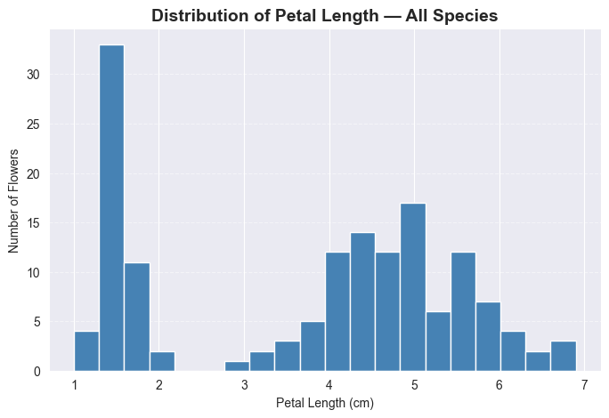
In [50]cell 4
# Count frequency of each petal length value print(df['petal_length'].value_counts().sort_index())
Output
petal_length 1.0 1 1.1 1 1.2 2 1.3 7 1.4 13 1.5 13 1.6 7 1.7 4 1.9 2 3.0 1 3.3 2 3.5 2 3.6 1 3.7 1 3.8 1 3.9 3 4.0 5 4.1 3 4.2 4 4.3 2 4.4 4 4.5 8 4.6 3 4.7 5 4.8 4 4.9 5 5.0 4 5.1 8 5.2 2 5.3 2 5.4 2 5.5 3 5.6 6 5.7 3 5.8 3 5.9 2 6.0 2 6.1 3 6.3 1 6.4 1 6.6 1 6.7 2 6.9 1 Name: count, dtype: int64
In [51]cell 5
# See the range of petal lengths
print("Smallest petal:", df['petal_length'].min())
print("Largest petal:", df['petal_length'].max())
print("Total range:", df['petal_length'].max() - df['petal_length'].min())
print("Total unique values:", df['petal_length'].nunique())Output
Smallest petal: 1.0 Largest petal: 6.9 Total range: 5.9 Total unique values: 43
In [52]cell 6
# Manually count flowers in first 3 bins
bin_width = 5.9 / 20
print("Each bin width:", round(bin_width, 3))
# Bin 1: 1.0 to 1.295
bin1 = df[(df['petal_length'] >= 1.0) & (df['petal_length'] < 1.295)]
print("\nBin 1 (1.0 to 1.295):", len(bin1), "flowers")
# Bin 2: 1.295 to 1.59
bin2 = df[(df['petal_length'] >= 1.295) & (df['petal_length'] < 1.59)]
print("Bin 2 (1.295 to 1.59):", len(bin2), "flowers")
# Bin 3: 1.59 to 1.885
bin3 = df[(df['petal_length'] >= 1.59) & (df['petal_length'] < 1.885)]
print("Bin 3 (1.59 to 1.885):", len(bin3), "flowers")Output
Each bin width: 0.295 Bin 1 (1.0 to 1.295): 4 flowers Bin 2 (1.295 to 1.59): 33 flowers Bin 3 (1.59 to 1.885): 11 flowers
In [53]cell 7
fig, ax = plt.subplots(figsize=(8, 5))
# Plot each species separately with different colors
ax.hist(df[df['species']=='setosa']['petal_length'],
bins=20, alpha=0.7, label='Setosa', color='steelblue', edgecolor='white')
ax.hist(df[df['species']=='versicolor']['petal_length'],
bins=20, alpha=0.7, label='Versicolor', color='tomato', edgecolor='white')
ax.hist(df[df['species']=='virginica']['petal_length'],
bins=20, alpha=0.7, label='Virginica', color='green', edgecolor='white')
ax.set_title('Petal Length Distribution by Species', fontsize=14, fontweight='bold')
ax.set_xlabel('Petal Length (cm)')
ax.set_ylabel('Number of Flowers')
ax.legend()
ax.grid(axis='y', linestyle='--', alpha=0.5)
plt.show()
In [54]cell 8
# These are ALL values going into the histogram
print("Total values passed to histogram:", len(df['petal_length']))
print("First 10 values:")
print(df['petal_length'].head(10).values)Output
Total values passed to histogram: 150 First 10 values: [1.4 1.4 1.3 1.5 1.4 1.7 1.4 1.5 1.4 1.5]
In [55]cell 9
fig, ax = plt.subplots(figsize=(8, 5))
ax.hist(df['petal_length'], bins=20,
color='steelblue', edgecolor='white')
ax.set_title('Distribution of Petal Length — All Species',
fontsize=14, fontweight='bold')
ax.set_xlabel('Petal Length (cm)')
ax.set_ylabel('Number of Flowers')
ax.grid(axis='y', linestyle='--', alpha=0.5)
plt.show()
In [56]cell 12
fig, ax = plt.subplots(figsize=(8, 5))
ax.hist(df[df['species']=='setosa']['petal_length'],
bins=20, alpha=0.7, label='Setosa',
color='steelblue', edgecolor='white')
ax.hist(df[df['species']=='versicolor']['petal_length'],
bins=20, alpha=0.7, label='Versicolor',
color='tomato', edgecolor='white')
ax.hist(df[df['species']=='virginica']['petal_length'],
bins=20, alpha=0.7, label='Virginica',
color='green', edgecolor='white')
ax.set_title('Petal Length Distribution by Species', fontsize=14, fontweight='bold')
ax.set_xlabel('Petal Length (cm)')
ax.set_ylabel('Number of Flowers')
ax.legend()
ax.grid(axis='y', linestyle='--', alpha=0.5)
plt.show()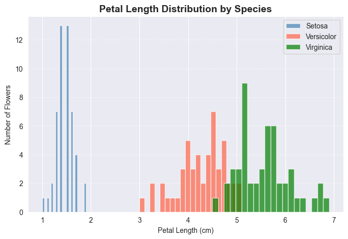
In [57]cell 0
import numpy as np
import pandas as pd
import matplotlib.pyplot as plt
import seaborn as sns
%matplotlib inline
sns.set_style('darkgrid')
sns.set_palette('viridis')
print("All libraries imported successfully!")
print("NumPy version:", np.__version__)
print("Pandas version:", pd.__version__)
print("Seaborn version:", sns.__version__)Output
All libraries imported successfully! NumPy version: 2.4.6 Pandas version: 3.0.3 Seaborn version: 0.13.2
In [58]cell 1
# Load iris dataset — built into seaborn just like tips!
df = sns.load_dataset('iris')
print("Dataset loaded successfully!")
print("Shape:", df.shape)Output
Dataset loaded successfully! Shape: (150, 5)
In [59]cell 3
# Before we code — quick reminder of how to read a box plot from what you learned earlier: # Top whisker → Maximum value # Top of box → 75% of data below this # Middle line → Median # Bottom of box → 25% of data below this # Bottom whisker → Minimum value
In [60]cell 4
fig, ax = plt.subplots(figsize=(8, 5))
# Group data by species for box plot
setosa_petals = df[df['species']=='setosa']['petal_length']
versicolor_petals = df[df['species']=='versicolor']['petal_length']
virginica_petals = df[df['species']=='virginica']['petal_length']
ax.boxplot([setosa_petals, versicolor_petals, virginica_petals],
labels=['Setosa', 'Versicolor', 'Virginica'])
ax.set_title('Petal Length Distribution by Species', fontsize=14, fontweight='bold')
ax.set_xlabel('Species')
ax.set_ylabel('Petal Length (cm)')
ax.grid(axis='y', linestyle='--', alpha=0.5)
plt.show()Output
/var/folders/07/ymtnct793nj_13sf3p9t0lqh0000gn/T/ipykernel_23508/2813677711.py:8: MatplotlibDeprecationWarning: The 'labels' parameter of boxplot() has been renamed 'tick_labels' since Matplotlib 3.9; support for the old name will be dropped in 3.11. ax.boxplot([setosa_petals, versicolor_petals, virginica_petals],
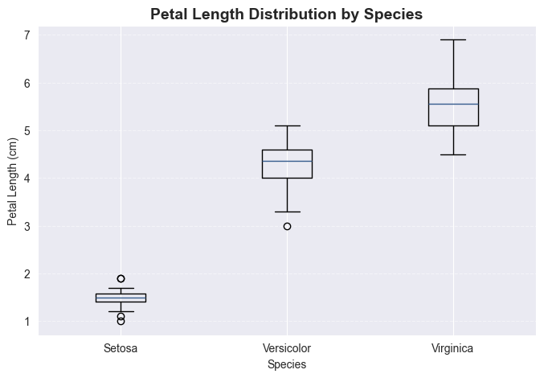
In [61]cell 6
# Find Setosa outliers in petal_length
Q1 = df[df['species']=='setosa']['petal_length'].quantile(0.25)
Q3 = df[df['species']=='setosa']['petal_length'].quantile(0.75)
IQR = Q3 - Q1
print("Q1:", Q1)
print("Q3:", Q3)
print("IQR:", IQR)
print("Lower boundary:", Q1 - 1.5 * IQR)
print("Upper boundary:", Q3 + 1.5 * IQR)
# Any values outside boundaries are outliers
outliers = df[df['species']=='setosa'][
(df[df['species']=='setosa']['petal_length'] < Q1 - 1.5*IQR) |
(df[df['species']=='setosa']['petal_length'] > Q3 + 1.5*IQR)
]
print("\nSetosa outliers:")
print(outliers)Output
Q1: 1.4
Q3: 1.5750000000000002
IQR: 0.17500000000000027
Lower boundary: 1.1374999999999995
Upper boundary: 1.8375000000000006
Setosa outliers:
sepal_length sepal_width petal_length petal_width species
13 4.3 3.0 1.1 0.1 setosa
22 4.6 3.6 1.0 0.2 setosa
24 4.8 3.4 1.9 0.2 setosa
44 5.1 3.8 1.9 0.4 setosaIn [62]cell 0
import numpy as np
import pandas as pd
import matplotlib.pyplot as plt
import seaborn as sns
%matplotlib inline
sns.set_style('darkgrid')
sns.set_palette('viridis')
print("All libraries imported successfully!")
print("NumPy version:", np.__version__)
print("Pandas version:", pd.__version__)
print("Seaborn version:", sns.__version__)Output
All libraries imported successfully! NumPy version: 2.4.6 Pandas version: 3.0.3 Seaborn version: 0.13.2
In [63]cell 1
# Load iris dataset — built into seaborn just like tips!
df = sns.load_dataset('iris')
print("Dataset loaded successfully!")
print("Shape:", df.shape)Output
Dataset loaded successfully! Shape: (150, 5)
In [64]cell 3
fig, axes = plt.subplots(2, 2, figsize=(12, 8))
measurements = ['sepal_length', 'sepal_width', 'petal_length', 'petal_width']
colors = {'setosa': 'steelblue', 'versicolor': 'tomato', 'virginica': 'green'}
positions = [(0,0), (0,1), (1,0), (1,1)]
for measurement, pos in zip(measurements, positions):
ax = axes[pos[0], pos[1]]
for species in ['setosa', 'versicolor', 'virginica']:
data = df[df['species']==species][measurement]
ax.hist(data, bins=15, alpha=0.6,
label=species, color=colors[species],
edgecolor='white')
ax.set_title(f'Distribution of {measurement}', fontweight='bold')
ax.set_xlabel(measurement)
ax.set_ylabel('Count')
ax.legend(fontsize=8)
plt.tight_layout()
plt.show()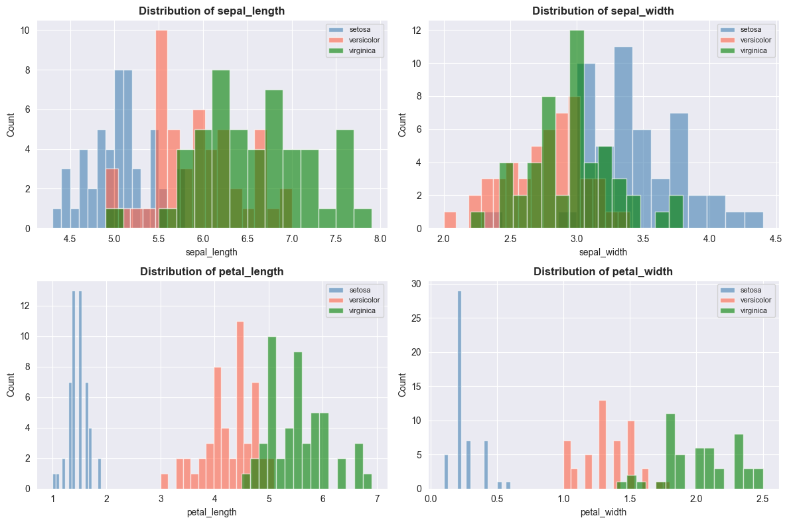
In [65]cell 0
import numpy as np
import pandas as pd
import matplotlib.pyplot as plt
import seaborn as sns
%matplotlib inline
sns.set_style('darkgrid')
sns.set_palette('viridis')
print("All libraries imported successfully!")
print("NumPy version:", np.__version__)
print("Pandas version:", pd.__version__)
print("Seaborn version:", sns.__version__)Output
All libraries imported successfully! NumPy version: 2.4.6 Pandas version: 3.0.3 Seaborn version: 0.13.2
In [66]cell 1
# Load iris dataset — built into seaborn just like tips!
df = sns.load_dataset('iris')
print("Dataset loaded successfully!")
print("Shape:", df.shape)Output
Dataset loaded successfully! Shape: (150, 5)
In [67]cell 5
fig, ax = plt.subplots(figsize=(8, 5))
ax.scatter(df['petal_length'], df['petal_width'],
alpha=0.7, color='steelblue', s=60)
ax.set_title('Petal Length vs Petal Width', fontsize=14, fontweight='bold')
ax.set_xlabel('Petal Length (cm)')
ax.set_ylabel('Petal Width (cm)')
ax.grid(linestyle='--', alpha=0.5)
plt.show()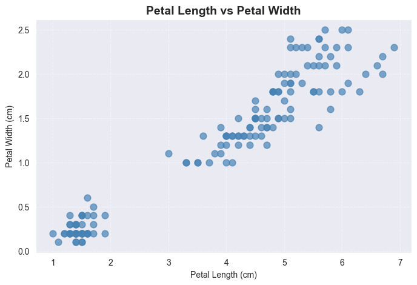
In [68]cell 6
fig, ax = plt.subplots(figsize=(8, 5))
colors = {'setosa': 'steelblue', 'versicolor': 'tomato', 'virginica': 'green'}
for species, group in df.groupby('species'):
ax.scatter(group['petal_length'], group['petal_width'],
label=species,
color=colors[species],
alpha=0.7, s=60)
ax.set_title('Petal Length vs Petal Width by Species', fontsize=14, fontweight='bold')
ax.set_xlabel('Petal Length (cm)')
ax.set_ylabel('Petal Width (cm)')
ax.legend()
ax.grid(linestyle='--', alpha=0.5)
plt.show()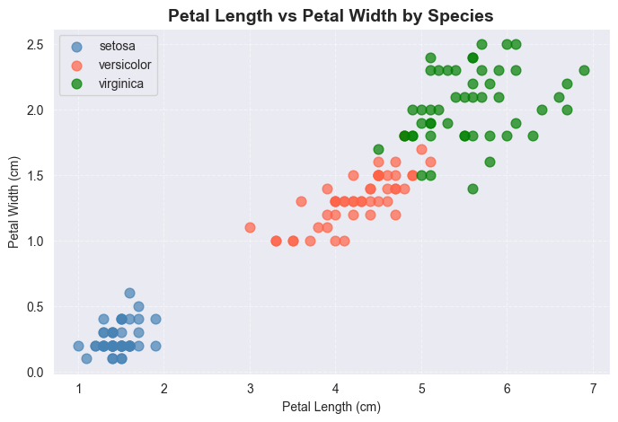
In [69]cell 8
sns.pairplot(df, hue='species',
palette={'setosa': 'steelblue',
'versicolor': 'tomato',
'virginica': 'green'})
plt.suptitle('Pair Plot — All Measurements vs All Measurements',
y=1.02, fontsize=14, fontweight='bold')
plt.show()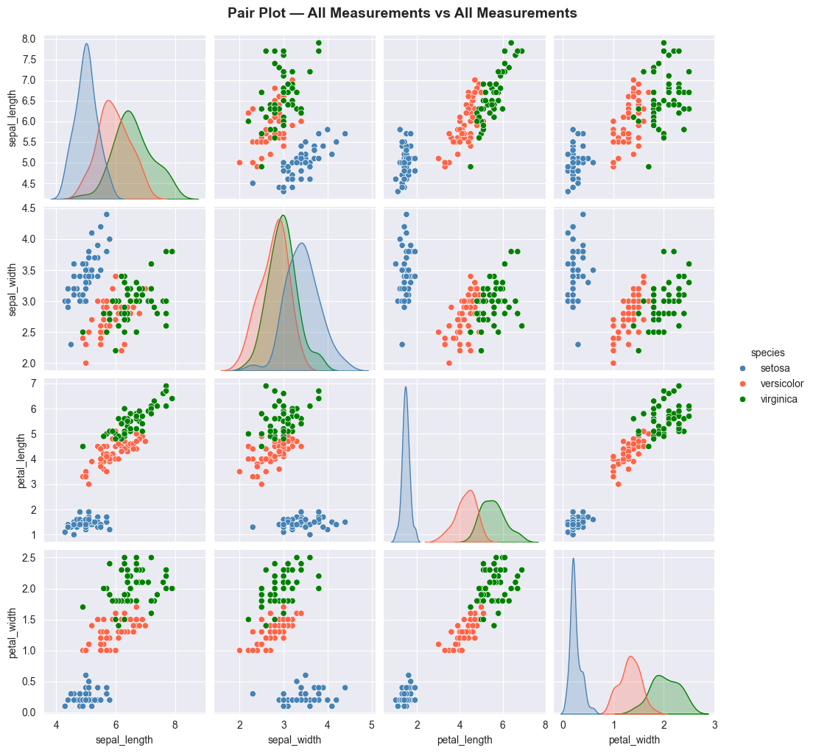
In [70]cell 9
import pandas as pd
import seaborn as sns
# Simple 3 column dataset
simple_data = pd.DataFrame({
'math': [90, 70, 85, 60, 95, 75, 80],
'science': [85, 72, 80, 65, 90, 70, 82],
'height': [160, 155, 158, 150, 165, 157, 162]
})
sns.pairplot(simple_data)
plt.show()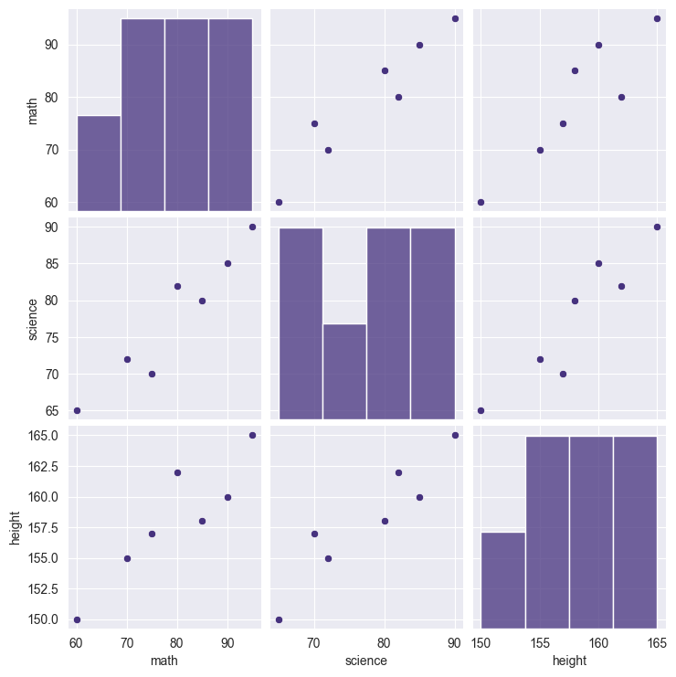
In [71]cell 11
fig, ax = plt.subplots(figsize=(8, 6))
# Calculate correlation between all measurements
correlation = df.drop('species', axis=1).corr()
print(correlation.round(2))
sns.heatmap(correlation,
annot=True,
fmt='.2f',
cmap='coolwarm',
center=0,
ax=ax)
ax.set_title('Correlation Between Measurements', fontsize=14, fontweight='bold')
plt.show()Output
sepal_length sepal_width petal_length petal_width sepal_length 1.00 -0.12 0.87 0.82 sepal_width -0.12 1.00 -0.43 -0.37 petal_length 0.87 -0.43 1.00 0.96 petal_width 0.82 -0.37 0.96 1.00
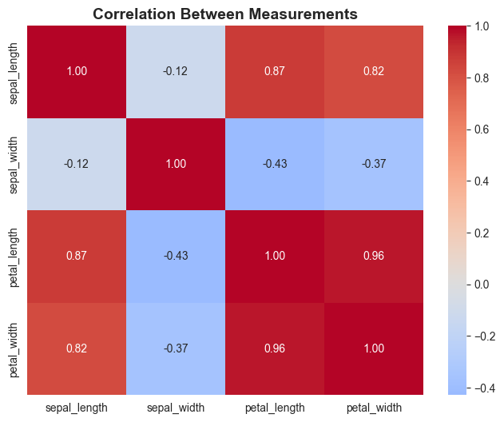